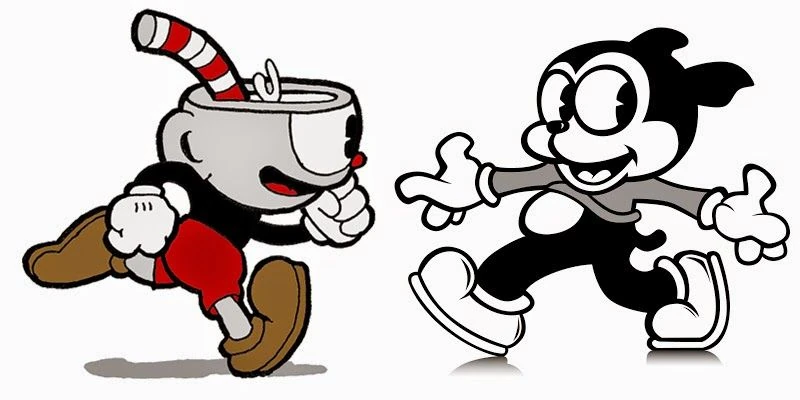
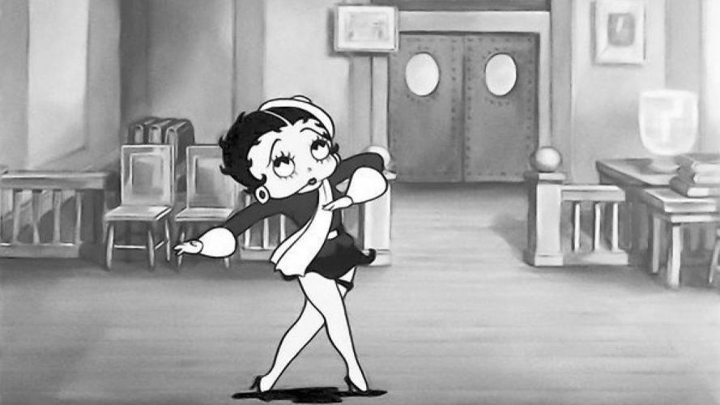
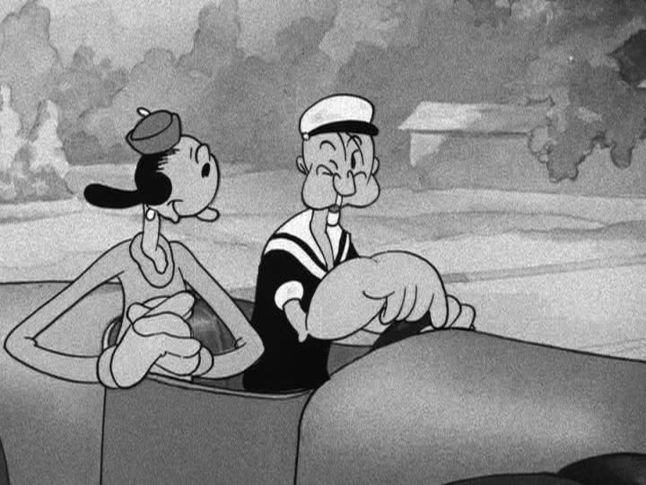
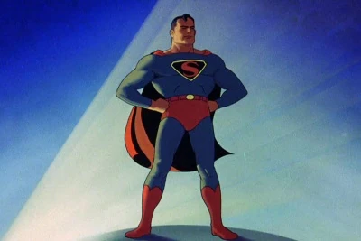
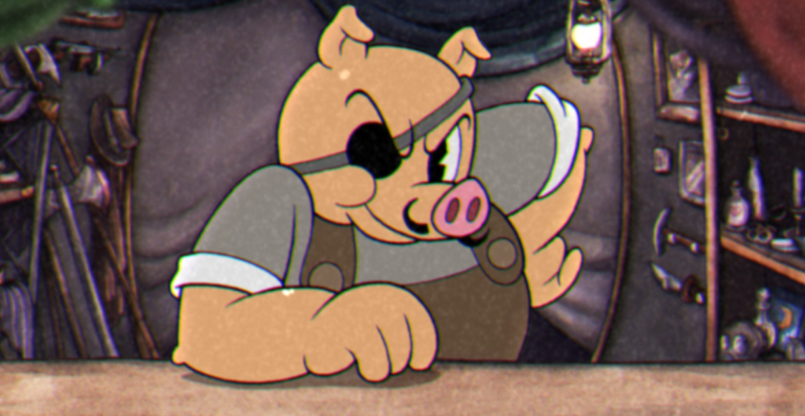
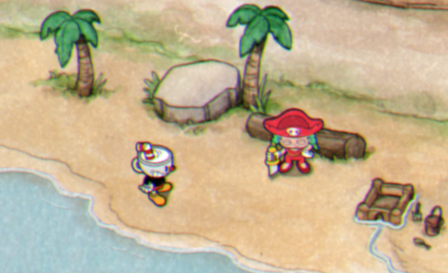
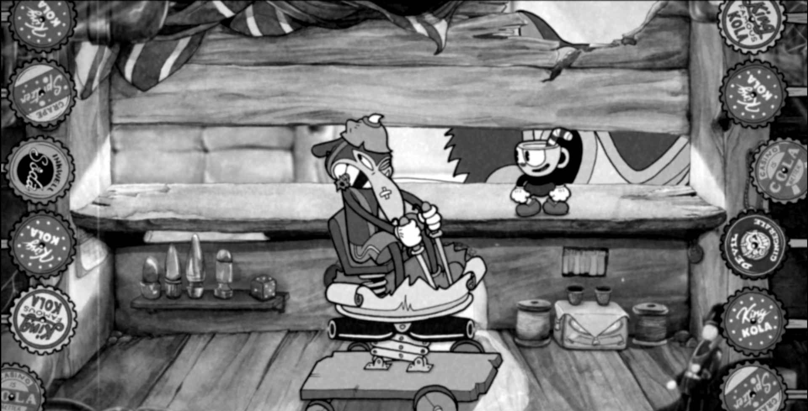

Como já é visível na gameplay, Cuphead foi um jogo com visual totalmente inspirado em desenhos antigos, levando muitos desses traços pros bosses, ambientação, e nos detalhes em geral. Essa ideia surgiu também dos irmãos Moldenhauer, que eram muito fãs dos desenhos da década de 30, o que fez eles criarem vontade de conhecer mais sobre a produção desses desenhos;

Xicrinho e Bimbo, O Cão; criação da Fleischer Animations Studios e inspiração de desing pro game
Foi aí que eles descobriram as obras dos irmãos Max e Dave Fleischer, que tinham o estúdio Inkwell Studios ou Fleischer Animations Studios, e foram responsáveis por desenhos famosos como Popeye, Betty Boop e Superman (1941). O estúdio deixou um legado mesmo após o seu fechamento, legado esse seguido por alguns admiradores dessa arte, como Chad e Jared Moldenhauer.

 
Após um tempo eles trabalhando na ideia de criar um jogo próprio, eles sabiam que essa escolha artísica seria a parte mais trabalhosa de ser feita, exigindo bastante conhecimento sobre os traços e cultura da época. Como essa era uma parte que eles gostavam muito de trabalhar, foram só implementando os detalhes em seus personagens


No produto final do jogo,é visível que esses detalhes foram perfeitamente trabalhados. Sabendo ainda que naquela época os estúdios de desenhos comumente usavam suas obras como um meio de criticar assuntos delicados e grandes, os irmãos Moldenhauer não deixaram de fazer isso também, criando uma História de dois irmãos imprudentes que, mesmo errando, tinham a escolha de fazer ou não que era correto no fim.
